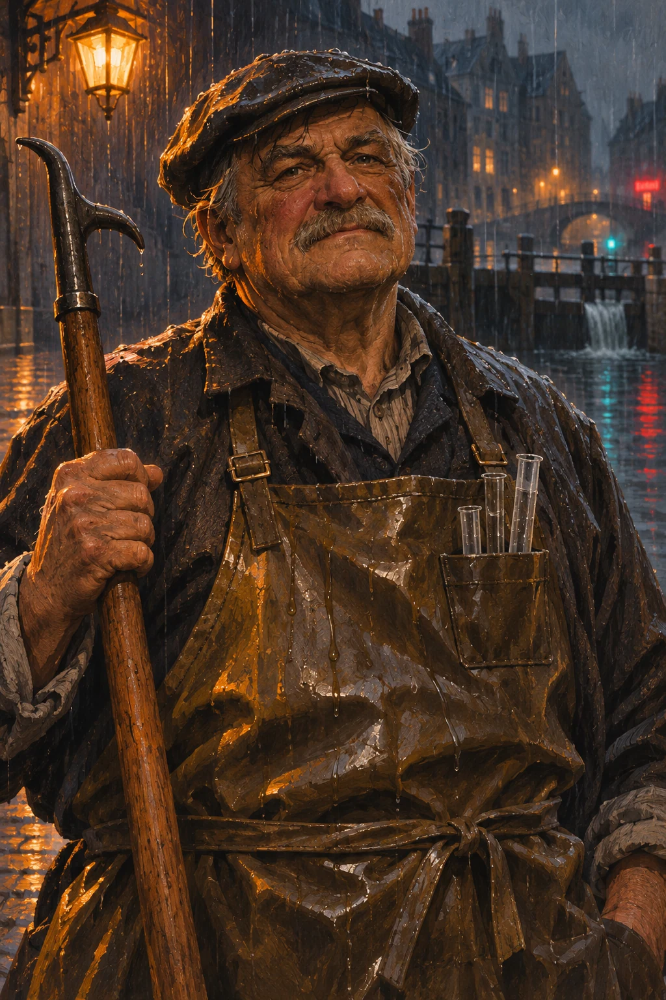
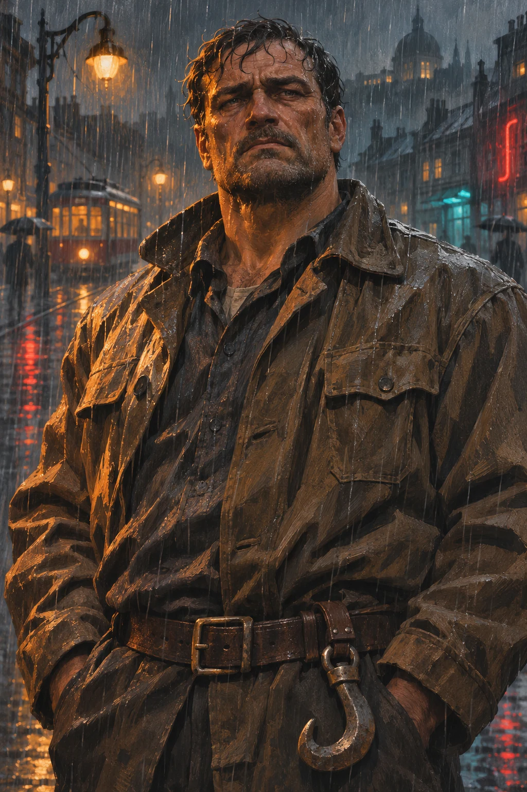

Найти Савелия у шлюза и узнать, кто и зачем ведёт двух других охотников.

Густав НелльХельга Меллер

Матвей Корд
Трамвай № 3, 18:05, остановка «Шлюзовая». Билет в вашем кармане размок и склеился с соседним. Бюро и участок — на этой же улице, но шлюз — другой Латрен: здесь город меряет свой дождь. Вода стоит под мостом выше, чем вчера, и с шумом идёт сквозь чугунную решётку, на которой застревает всё, что несёт канал, — ветки, бутылки, шляпы. Стеклянная галерея дождемеров светится в сумерках, как аквариум: в ней рядами стоят высокие стеклянные трубки, и в каждой вода поднялась до новой риски. Говорят, смотритель шлюза записывает дождь столько лет, что сам стал похож на дождемер, — длинный, прозрачный и мокрый. В лужах на мосту красным дрожит неон «ШЛЮЗ ЗАКРЫТ». К перилам прилип чей-то размокший трамвайный билет. Над водой слышно, как внизу скребёт багор.
Подготовка и роли
Шкала вечера. Старт: ○ 0, □ 4, △ 3. Прибавьте ○ +2 после вчерашнего П (+1 после Ч) и ○ +1 за вчерашний ✓; △ +2 после вчерашнего П, если Матвей ещё не знает. После сцен 1 и 2 — время: □ +2, △ +1. Осведомитель □ +2 после сцены 2. Сравнение перед сценой 3 как всегда: ○ не меньше обеих — отряд первым; ничья — в пользу отряда. □ больше ○ — часовщики разобрали койку; △ — Густава оттеснили на лестнице; обе — Хельга и Матвей едва не дерутся, Густав молчит. Матвей знает — △ −2 сразу. Хельга знает (путь В) — отметьте на карте финала. Улики сцены 3 на шкалу не идут. Клара не появляется, только звонок: её наводка точна, потому что она знает мужа. Не делайте её зловещей: она вежлива и устала. Раннее обвинение Клары перед Фальком: заявление он примет, но без живого Руна или бумаги дела не откроет; Клару вызовут и отпустят; Подозрение — только если он видел две улики одного пути.
Роман Иврен
Ванда Гесс
Казимир Лотт
Сцена 1 · 45 минут
Решётка
Ведущий сначала ставит фишки: ○ 0, □ 4, △ 3, затем прибавляет наводку и вчерашние поправки из плана вечера. Если вчера Кларе сказали правду или часть, утром она сказала: «Он любит воду. Его крёстный — смотритель шлюза Нелль». Густав стоит у решётки по колено в плавучем мусоре и багром снимает чей-то утонувший зонт; спицы торчат, как рёбра. Красный «ШЛЮЗ ЗАКРЫТ» дрожит в луже у его сапог. «Двадцать миллиметров за ночь, — говорит он, не оборачиваясь. — Город тонет медленно. Вы с причала? Вода всегда несёт от Сухого причала к моей решётке. Всегда». Книга шлюза лежит на ящике под клеёнкой: если говорить с ним спокойно, он покажет страницу за 21 октября (книга шлюза: ○ +1). Верный вопрос — «Откуда течение несло тело?»: «С Сухого причала. Всю ночь. В десять минут седьмого оно лежало на решётке, пальто тёмно-синее. Снял сам. С тех пор сплю плохо» (○ +1). Услуга — помочь очистить решётку от досок: ○ +2, □ +1, △ +1; десять крон из конверта вместо услуги — ○ +2 без хода соперников. Густав то и дело поглядывает на верхнее окно галереи; Конрад ловит окно в видоискатель: в раме висит мокрый рукав дождевика. «К утру будет тридцать, — бормочет он. — Вода всегда приходит раньше, чем её ждут». В конце сцены ведущий вслух: □ +2, △ +1.
Выборы
Помочь Густаву очистить решётку и заработать его доверие (услуга ○ +2, □ +1, △ +1)
Показать снимок с похорон: Густав узнаёт крестника и говорит прямее
Спросить про верхнее окно и рукав дождевика
Оставить Густава и пойти на мост, где уже слышны голоса
Проверка и путь без броска
Проницательность Сл 13: заметить, что Густав смотрит на верхнее окно галереи. Успех — отряд понимает, что наверху кто-то жил, и Густав вздрагивает: «Не ходите туда без меня». Провал — Густав отмалчивается, но мокрый рукав в окне виден всем. Без броска: Конрад или любой герой замечает рукав по виду из окна.
Если не получилось
Если Густав отмалчивается и книгу не показывает, на мост поднимается инспектор Фальк за отчётом о воде и говорит: «Отсюда я его и забрал» — книгу шлюза читают вслух при нём; ○ +1 за улику засчитывается, но Густав обижен и в сцене 3 отвечает только после услуги.
Сцена 2 · 45 минут
Две цены
На мост одновременно: Хельга сходит с трамвая в сером плаще, Матвей причаливает на лодке с двумя грузчиками. Оба идут к отряду и косятся друг на друга. «Живой Рун стоит обществу ноль крон, — тихо говорит Хельга. — Мёртвый — сорок тысяч. Я работаю на ноль. Мы не ломаем двери, мы покупаем ключи». Она кладёт на перила страницу полиса и тяжёлый латунный ключ на шнурке: за то, что знает отряд, и за снимок на сутки (тогда завтра он не заменит верный вопрос; если была встреча «Ряды под стеклом» — просит ещё и пальто). Копия полиса: ○ +1; подпись «С. Рун» с круглой петлёй на «Р». Матвей стучит крюком по перилам: «Мой брат ушёл к Руну двенадцатого. Ещё раз: на кого вы работаете?» За честный ответ показывает записку Юлиана — «Рун. Треть — мало» (○ +1) и зонт Савелия, если тот у артели. Если с вечера 2 Кларе хоть раз говорили правду: «Мне звонит женщина. Не называется. Говорит, где вы были вчера. Вдова ведь тоже Рун, а?» Если в вечере 2 была драка, сперва извинение. Верный вопрос любому: «Кто вам платит?» (○ +1). Срезанный путь — лодка Густава к водяной двери галереи: Сила (Атлетика) Сл 12, ○ +2. Трамваем вдоль набережной Роман — без броска. Провал — ○ +1, △ +1. Если показать Матвею объявление рядом с листом опознания, он садится на перила, отсылает людей (△ −2) и долго молчит: «Пальто от Бранда. Я ему его подарил». Путь В, показанный Хельге: «Значит, мы искали не того подлеца». В конце сцены: □ +2, △ +1, осведомитель Хельги □ +2. Сравните фишки.
Выборы
Заключить сделку с Хельгой: страница полиса, ключ башни, снимок на сутки
Заключить сделку с Матвеем: честный ответ за записку брата
Показать Хельге путь В — «Хельга знает»
Показать Матвею объявление о пропаже рядом с листом опознания — «Матвей знает»
Отказать обоим и уйти к галерее, откладывая полис на «Точный час»
Проверка и путь без броска
Убеждение Сл 14: получить у Хельги полис без снимка. Успех — снимок остаётся у отряда. Провал — она настаивает на снимке. Срезанный путь — Сила (Атлетика) Сл 12 или трамвай № 3 вдоль набережной (Роман без броска). Без броска: отдать снимок на сутки.
Если не получилось
Если обе сделки сорваны (□ +1), Хельга всё равно оставляет на перилах копию полиса: «Почитайте. Может, поумнеете». Записку Юлиана Матвей цитирует вслух, отвернувшись, и повторяет медленно, пока кто-нибудь не запишет её слова.
Сцена 3 · 45 минут
Верхняя комната
Перед сценой ведущий сравнивает ○, □ и △ вслух и объявляет, кто был наверху первым. Улики этой сцены на шкалу не идут. Верхняя комната: койка среди стеклянных трубок, остывшая чашка, люк к крыше галереи открыт, и дождь капает на раскрытую книгу. Внизу на лестнице слышны Хельга и Матвей: «Три минуты, — говорит она. — Не пять». «Он мой, — гремит Матвей. — Скажи ещё, что он ваш». Если отряд пришёл первым (✓): Густав верит и тихо говорит: «Он ушёл к сестре. Аглая Мейр, суфлёр в «Фонаре». Скажете кому — сюда больше не приходите». Если раньше □: часовщики разобрали койку, и Густав молчит: «Миллиметры я скажу. Крестника — нет». Если раньше △: Густава оттеснили на лестнице, он сидит на ступеньке и молчит; Хельга и Матвей перекрикиваются внизу. Если □△: они едва не дерутся на лестнице; отряд уходит с билетом «Фонаря» из вечера 4 и без слов Густава. Отряд идёт по мокрым следам ботинок к люку и по крыше галереи, откуда виден трамвайный круг: трамвай № 1 к центру уже уходит, и на подножке мелькает высокий силуэт. Густав кивает на люк: «Всегда уходил по крыше. Мальчишкой — тоже». Если за столом Казимир Лотт, он кладёт копию полиса рядом с запиской Клары и говорит только то, что видно: «Петля на „Р“ одна и та же».
Выборы
Заплатить услугой или помощью Густаву, чтобы он назвал сестру
Подняться по люку и осмотреть крышу галереи
Остановить спор на лестнице, чтобы не потерять время
Прислушаться к тому, что кричат Хельга и Матвей, и запомнить их слова
Проверка и путь без броска
Анализ Сл 12: по мокрым следам ботинок понять, что Савелий ушёл на крышу и оттуда на трамвай. Успех — отряд видит, что ушёл он считаные минуты назад. Провал — следы смазаны дождём. Без броска: Густав кивает на люк.
Если не получилось
Если отряд ничего не понял, Аглаю называет театральный билет из вечера 4, а Фальк, пришедший за отчётом, говорит: «Сестра у него в театре. В деле записано». Но Густав после этого не доверяет отряду.
Книга шлюза
Толстая книга смотрителя шлюза в клеёнчатом переплёте, с колонками «миллиметры» и «на решётке». Записи идут день за днём, без пропусков, одним и тем же почерком; уголки страниц сморщены от воды.
Что можно установить
Запись 21.X, 6:10: тело мужчины в тёмно-синем пальто на решётке, сообщено в участок. Течение всю ночь шло от Сухого причала.
Получение
Густав Нелль показывает книгу, если с ним говорят спокойно или помогают с решёткой. Бросок не нужен.
Запасной путь
Если Густав молчит, Фальк подтверждает, откуда привезли тело: «Отсюда я его и забрал». Густав может произнести запись вслух.
Записка Юлиана
Страница, вырванная из карманного календаря, исписана торопливым карандашным почерком с сокращениями. Матвей Корд держит её в клеёнчатом конверте во внутреннем кармане и, прежде чем показать, долго вытирает руки.
Матвей показывает записку на мосту шлюза за честный ответ на вопрос, на кого работает отряд. Бросок не нужен.
Запасной путь
Матвей уже цитировал её на причале. В вечере 7 наёмные ловцы артели носят переписанную копию, один бросает её, убегая.
Полис на 40 000
Заверенная копия страницы полиса «Точного часа» № 4417 на плотной гербовой бумаге, с круглой печатью и циферблатом в углу. Сложена вчетверо, немного подмокла по сгибам; внизу — подпись застрахованного.
Что можно установить
Застрахован Савелий Рун на 40 000 крон, выписан 2 сентября агентом Ю. Кордом, выгодоприобретатель К. Рун. Подпись «С. Рун» с большой петлёй на «Р».
Получение
Хельга Меллер отдаёт страницу за то, что знает отряд, или за снимок Савелия на сутки. Бросок не нужен.
Запасной путь
Если обе сделки сорваны, Хельга оставляет копию на перилах моста: «Почитайте. Может, поумнеете». Позже её дадут в «Точном часе» за слово «он жив» со снимком.
Изменения после решений
Если Отряд сказал Кларе в звонке вечера 5 правду (П). → Ночью у галереи разбивают стекло и уносят ключ от верхней комнаты; Густав запирает шлюз и в вечере 7 на лодке к парку не приходит. Клара знает и о театре: в вечере 6 она в зале «Фонаря».
Если Отряд показал Матвею объявление о пропаже рядом с листом опознания («Матвей знает») → △ −2; в вечере 7 к парку приходят только ловцы артели по её звонку, без грузчиков Матвея, а на крыши в финале артель не поднимается.
Если Отряд показал Хельге путь В («Хельга знает») → В финале часовщики стреляют в Клару, а не берут Савелия у героев. Ключ башни их задерживает: запертая дверь — на 2 раунда позже; если Хельга знает, дверь не запирают.
Если Обе сделки сорваны и □ получил +1 → Хельга оставляет копию полиса на перилах, но снимок не остаётся у отряда, а Матвей уходит с запиской брата.
Выдать в нужный момент
Страница полиса — Сделка с Хельгой на мосту шлюза (вечер 5) или позже в «Точном часе» за слово «он жив» со снимком.
Страница ночного журнала — Стель позволяет переписать страницу (сцена 2 вечера 2) или Матвей показывает свою копию (вечер 5).
Завершение вечера
Дождемеры переливаются, как стеклянные свечи, вода под мостом чернеет. Густав пишет в книгу: «28.X. 31 мм. Посетители». В 23:00 отряд звонит Кларе по номеру 4-17 и выбирает: правду (П), часть (Ч) или молчание (М); ведущий вписывает букву в пятую клетку ряда «Звонков». Клара слушает, переспрашивает названия и тихо говорит: «Скажите мне, где он».